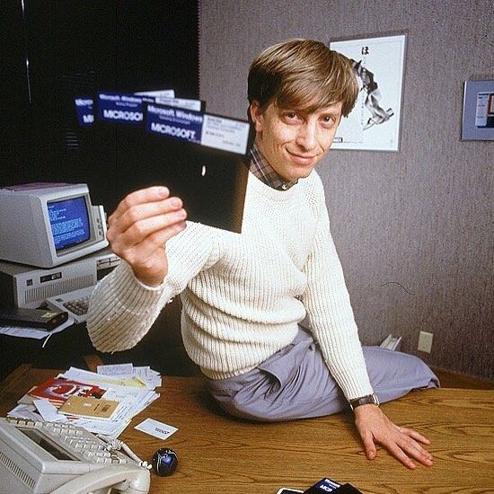
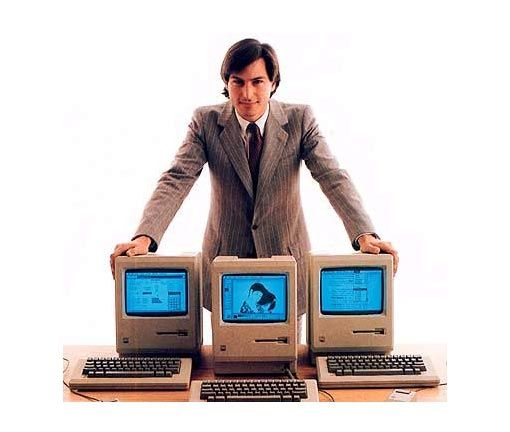
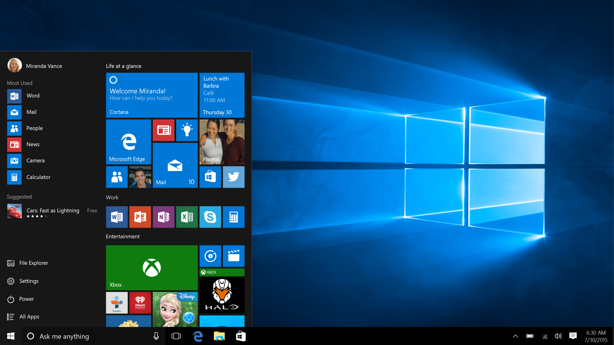
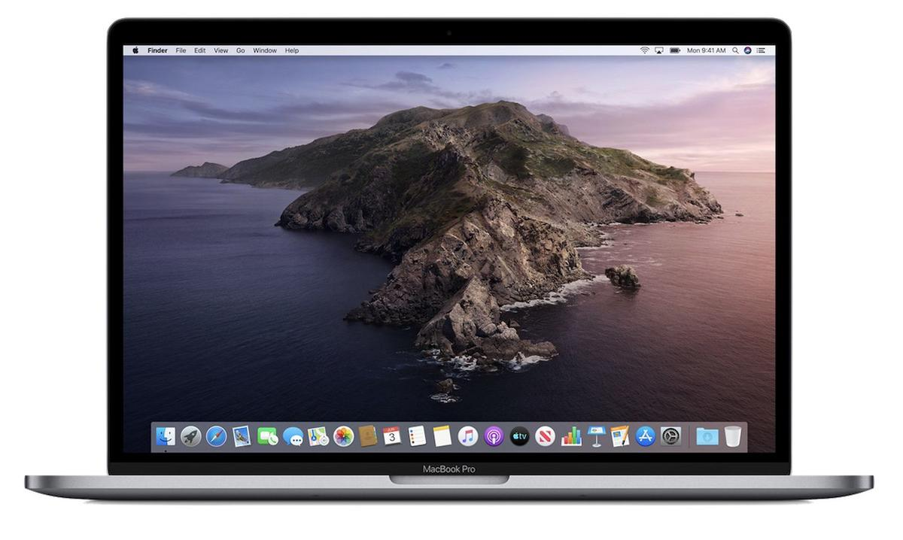

When personal computers (PC) were first introduced, in the mid-1970s, the operating system was known as CP/M (Control Program/Monitor). CP/M had a text-based interface. In 1981, MS-DOS (Microsoft - Disk Operating System) became the standard operating system for personal computers. MS-DOS was continually updated over the news several years. In 1985, Microsoft introduced the first operating system (Windows 1.0) with a graphic-user-interface for the personal computer giving users the ability to have graphic-based menus and icons to click on.
it was a huge step for Microsoft. It was the company’s first graphically rich user interface – at this point, only Apple had released anything like it so it was pretty forward-thinking for the time.
One year earlier in 1984, Apple Computer Inc. introduced the Macintosh personal computer, with the Macintosh 128K model, which came bundled with what was later renamed to Mac OS.
After hearing about the pioneering GUI technology being developed at Xerox PARC from former Xerox employees, Jobs negotiated a visit to see the Xerox Alto computer and Smalltalk development tools in exchange for Apple stock options.The Macintosh operating systems used concepts from the Xerox Alto, but many elements of the graphical user interface were created by Apple including the menu bar, pop-up menus, and the concepts of drag and drop and direct manipulation.


Although Windwos 1.0 was smiled at by many, as it was only released two years after the announcement, it included features as drop-down menus, scroll bars, icons and dialogue boxes, and instead of typing in complex commands, you navigated by pointing and clicking. In essence, it’s the same basic user interface that we still use today.
Now 45 years later windows is the most popular operating system for personal computers globally. You cannot imagine a world without it. The Windows 1.0 was the starting point for a breathtaking evolution. Two years later Microsoft released Windows 2.0 and in 1990 Windows 3.0. The last version of Windows, Windows 10, was released in 2015.
After 46 years MacOS has already reached version 10.15.
The operating system of today looks very different, but still has basically the same features as the former version 1.0. Many elements of the graphical user interface: the menu bar, pop-up menus, and the concepts of drag and drop and direct manipulation are still a part of todays MacOS. Apples System 1.0 has significantly influenced today's macOS.
